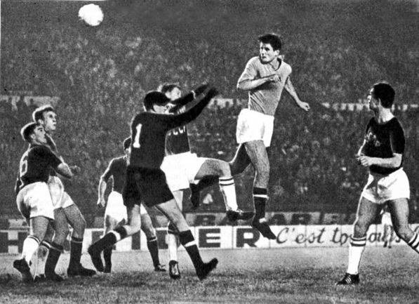

Немного об ФутболеОписание
Футбол (от англ. foot — ступня, ball — мяч) — командный вид спорта, в котором целью является забить мяч в ворота соперника ногами или другими частями тела (кроме рук) большее количество раз, чем команда соперника. В настоящее время самый популярный и массовый вид спорта в мире 
ФИФА и Международный олимпийский комитет используют «футбол», как официальное международное название игры. Полное англоязычное название игры, «association football» («футбол по правилам Ассоциации»), было выбрано после создания английской Футбольной ассоциации в 1863 году, чтобы отличать эту игру от других разновидностей футбола, существовавших в то время, например регби («rugby football», «футбол по правилам Школы Регби»). Со временем длинные названия вариантов игры стали сокращаться в повседневной речи.  ИсторияРанние разновидности футбола В игры с мячом играли во многих странах. В Китае такая разновидность называлась Чжу-Кэ. В древней Спарте игра называлась «Эпискирос», а в Древнем Риме «Харпастум». Где-то в Новое время в Брянских землях проводились игры, инвентарём которых был кожаный мяч размером с человеческую голову, набитый перьями. Эти состязания наименовались как «шалыга» и «кила». Примерно в XIV веке итальянцы изобрели игру «Кальчо». Именно они завезли эту игру на Британские острова. Соревнованиепо футболу, как и в любом другом виде спорта — важная составляющая игры. Соревнование организуется федерацией, для каждого турнира составляется регламент, в котором обычно определяют состав участников, схему турнира, правила определения победителя при равенстве очков и какие-то отклонения от правил, например количество замен. Соревнования делятся на внутренние и международные, которые в свою очередь разделяются на клубные и национальных сборных. Футбольные турниры собирают десятки тысяч зрителей на трибунах стадиона и многомиллионные аудитории по телевидению. |